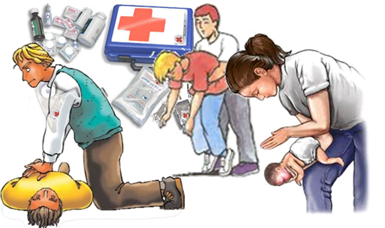
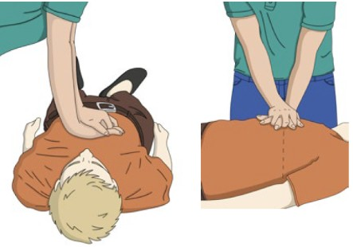
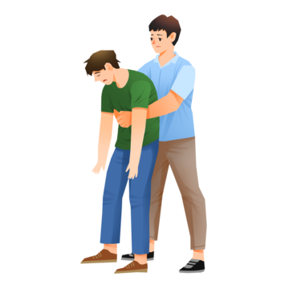
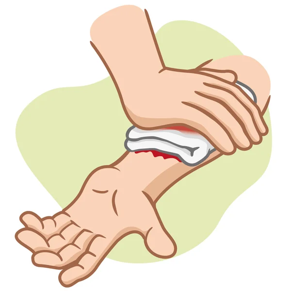
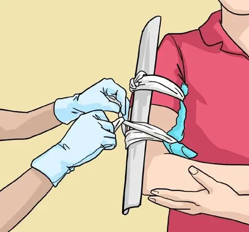

El objetivo principal es preservar la vida, evitar el agravamiento de lesiones, aliviar el dolor y facilitar la recuperación, siguiendo la regla PAS: Proteger, Alertar y Socorrer
Introducción
Los primeros auxilios son aquellas medidas inmediatas que se toman en una persona lesionada, inconsciente o súbitamente enferma, en el sitio donde ha ocurrido el incidente (escena) y hasta la llegada de la asistencia sanitaria (servicio de emergencia). Estas medidas que se toman en los primeros momentos son decisivas para la evolución de la víctima (recuperación). El auxiliador, antes de prestar ayuda (socorrer, auxiliar), debe siempre procurar el auto cuidado (no exponerse a peligros asegurando su propia integridad). Solo cuando su salud no corre riesgos podrá entonces asistir a la víctima.
Normas generales
- Proteger:Antes de actuar, asegúrese de que la escena sea segura para usted y para la víctima para evitar nuevos accidentes.
- Alertar:Llame a los servicios de emergencia indicando lugar y tipo de accidente.
- Socorrer:Evalúe y atienda a la víctima (consciencia y respiración).
¿Qué hacer?
- Evaluar Conciencia: Pregunte en voz alta para ver si responde o agite sus hombros.
- Evaluar Respiración: Utilice el método VOS (Ver si el pecho se mueve, Oír la respiración, Sentir el aire) durante 10 segundos.
- Posición Lateral de Seguridad (PLS): Si la persona respira pero no responde, colóquela de lado para mantener la vía aérea despejada.
- RCP (Reanimación Cardiopulmonar): Si no responde ni respira, inicie compresiones torácicas rápidas y fuertes en el centro del pecho (100-120 por minuto).

¿Qué no hacer?
- No abandone a la víctima.
- No mover: Evite mover a una víctima de accidente de tránsito o caída grave para prevenir daños en la columna vertebral.
- No aplicar pomadas o remedios caseros en quemaduras graves.
- No dar alimentos ni bebidas si la persona está inconsciente o grave.
Reanimación Cardiopulmonar (RCP)
La reanimación cardiopulmonar (RCP) es un tratamiento de emergencia que se realiza cuando una persona dejó de respirar o el corazón ya no late. Por ejemplo, cuando una persona tiene un ataque cardíaco repentino o casi se ahoga. La reanimación cardiopulmonar puede salvar vidas.
Pasos para hacer RCP
- Asegurar la escena. Evitar ponerse en peligro.
- Acercarce dar palmadas suaves en los hombros y hablar con la persona, si no responde, se encuentra inconsciente
- Observar el movimiento de tórax: si no respira, si jadea o boquea.
- Llamar al servicio de emergencias médicas e informar que hay una persona inconsciente que no respira.
- Iniciar las maniobras de RCP (Reanimación Cardiopulmonar)
Maniobras RCP
- Colocar tus manos en el centro del pecho. Una mano sobre la otra.
- Entrecruzar los dedos.
- Comprimir fuerte el pecho.
- Frecuencia: de 100 a 120 compresiones por minuto
- Profundidad 5 cm aproximadamente
- Al llegar a las 100 compresiones verificar pulso, si tiene, esperar a que despierte, si no tiene, continuar con las compresiones hasta que llegue el personal médico
- Una vez comenzado el RCP no se puede dejar hasta que lleguen los médicos.
- En el caso de que la persona despierte no se la debe dejar sola en ningún momento.

Obstrucción de las vías aéreas
La obstrucción de vías aéreas es el bloqueo parcial o total del flujo de aire hacia los pulmones, impidiendo la respiración normal. Puede ser causada por objetos extraños (atragantamiento), inflamación o reacciones alérgicas, representando una emergencia médica crítica que requiere acción inmediata para evitar la asfixia.
- Obstrucción Parcial: La persona puede toser, hablar o emitir sonidos. El aire pasa con dificultad.
- Obstrucción Total: El paso de aire está bloqueado. La persona no puede toser, hablar, ni respirar; suele llevarse las manos al cuello (señal universal de asfixia), y la piel puede ponerse azulada (cianosis).
Qué hacer ante una obstruccion de las vías aéreas
- Si es parcial: Anime a la persona a toser fuertemente.
- Si es total: Realice la maniobra de Heimlich
- En lactantes (menores de 1 año), se deben realizar golpes en la espalda y compresiones torácicas.
- Llame al 911 inmediatamente si la persona pierde el conocimiento o no puede respirar.

Hemorragias
Una hemorragia es la salida de sangre de los vasos sanguíneos, ya sea al exterior (externa) o dentro del cuerpo (interna), debido a lesiones, enfermedades o trastornos de coagulación. Requiere atención inmediata para detener la pérdida de sangre, mantener la presión arterial y evitar el shock hipovolémico, el cual puede ser fatal si no se trata rápido.
Pasos Clave para Primeros Auxilios en Hemorragias Externas
- Seguridad: Use guantes o protección para evitar contacto con la sangre.
- Presión Directa:Presione firmemente sobre el punto de sangrado con una gasa, paño limpio o prenda.
- No retirar apósitos: Si la sangre empapa la gasa, coloque otra encima sin quitar la primera.
- Elevación: Si es posible, mantenga la extremidad herida elevada para reducir el flujo sanguíneo.
- Esperar asistencia médica.

volver al inicioFracturas
Una fractura es la ruptura total o parcial de un hueso, comúnmente causada por traumatismos, caídas o movimientos repetitivos. Los síntomas incluyen dolor intenso, inflamación, deformidad y movilidad limitada.
Acciones Clave
- Evaluar y Tranquilizar: Mantenga a la persona inmovilizada y en calma.
- Detener Hemorragias: Aplique presión suave sobre la herida con un paño limpio. En fracturas expuestas (abiertas), no presione directamente sobre el hueso sobresaliente.
- Inmovilizar (Férula): Utilice tablas, cartón o revistas para inmovilizar la articulación por encima y por debajo de la zona fracturada. No apriete demasiado el vendaje.
- Reducir Inflamación: Aplique compresas frías o hielo envuelto en tela durante 15-20 minutos.Manejo de Fractura Expuesta: Cubra con apósito estéril o limpio sin intentar reintroducir el hueso.
- Elevación: Si es posible, eleve la zona lesionada por encima del nivel del corazón.Manejo de Fractura Expuesta: Cubra con apósito estéril o limpio sin intentar reintroducir el hueso.
- Manejo de Fractura Expuesta: Cubra con apósito estéril o limpio sin intentar reintroducir el hueso.

Contactos de emergencia
| NOMBRE | CONTACTO | HORAS DE ATENCIÓN |
|---|---|---|
| Policía | 911 | 24 hs. |
| Emergencia Médica | 107 | |
| Bomberos | 100 | 07:00hs-12:00hs |